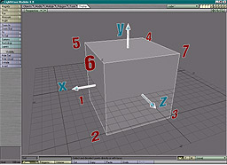
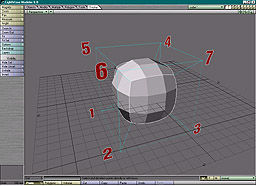

Object File ExamplesThis page is a supplement to the LightWave® LWO2 object file format specification. It illustrates the most common elements of LightWave® object files using a unit cube embellished in various ways. The discussion assumes you have access to the spec, but reading it isn't a prerequisite. In fact, you may want to read through these examples before tackling the reference information in the spec. File contents are presented as both hex dumps and outlines. Although the outlines are much easier to read, the hex dumps are important because they're unambiguous. They contain the actual bytes of the file, written as 2-digit hexadecimal numbers, with 16 per line. Many of the files themselves can be found in the same directory as this page. The source code samples in the LightWave® plug-in SDK include a standalone LWO2 reader.
The first example is a simple unit cube centered on the origin, with default surface settings and a single layer. The file is 348 bytes in length. A hex dump of the entire file looks like this. 46 4F 52 4D 00 00 01 54 4C 57 4F 32 54 41 47 53 FORM LWO2TAGS
00 00 00 08 44 65 66 61 75 6C 74 00 4C 41 59 52 Default LAYR
00 00 00 12 00 00 00 00 00 00 00 00 00 00 00 00
00 00 00 00 00 00 50 4E 54 53 00 00 00 60 BF 00 PNTS
00 00 BF 00 00 00 BF 00 00 00 3F 00 00 00 BF 00
00 00 BF 00 00 00 3F 00 00 00 BF 00 00 00 3F 00
00 00 BF 00 00 00 BF 00 00 00 3F 00 00 00 BF 00
00 00 3F 00 00 00 BF 00 00 00 3F 00 00 00 3F 00
00 00 BF 00 00 00 3F 00 00 00 3F 00 00 00 3F 00
00 00 BF 00 00 00 3F 00 00 00 3F 00 00 00 42 42 BB
4F 58 00 00 00 18 BF 00 00 00 BF 00 00 00 BF 00 OX
00 00 3F 00 00 00 3F 00 00 00 3F 00 00 00 50 4F PO
4C 53 00 00 00 40 46 41 43 45 00 04 00 00 00 01 LS FACE
00 02 00 03 00 04 00 00 00 04 00 05 00 01 00 04
00 01 00 05 00 06 00 02 00 04 00 03 00 02 00 06
00 07 00 04 00 00 00 03 00 07 00 04 00 04 00 04
00 07 00 06 00 05 50 54 41 47 00 00 00 1C 53 55 PTAG SU
52 46 00 00 00 00 00 01 00 00 00 02 00 00 00 03 RF
00 00 00 04 00 00 00 05 00 00 53 55 52 46 00 00 SURF
00 2A 44 65 66 61 75 6C 74 00 00 00 43 4F 4C 52 Default COLR
00 0E 3F 48 C8 C9 3F 48 C8 C9 3F 48 C8 C9 00 00
44 49 46 46 00 06 3F 80 00 00 00 00 DIFF
Here's the same file written in outline form. FORM 340 LWO2
TAGS 8
"Default"
LAYR 18
0
0
0.0 0.0 0.0
""
PNTS 96
-0.5 -0.5 -0.5
0.5 -0.5 -0.5
0.5 -0.5 0.5
-0.5 -0.5 0.5
-0.5 0.5 -0.5
0.5 0.5 -0.5
0.5 0.5 0.5
-0.5 0.5 0.5
BBOX 24
-0.5 -0.5 -0.5
0.5 0.5 0.5
POLS 64
FACE
4 0 1 2 3
4 0 4 5 1
4 1 5 6 2
4 3 2 6 7
4 0 3 7 4
4 4 7 6 5
PTAG 28
SURF
0 0
1 0
2 0
3 0
4 0
5 0
SURF 42
"Default"
""
COLR 14
0.78431 0.78431 0.78431
0
DIFF 6
1.0
0
LightWave® object files use the IFF syntax described in the EA-IFF85 document. Data is stored in a collection of chunks. Each chunk begins with a 4-byte chunk ID and the size of the chunk in bytes, and this is followed by the chunk contents. FORM 340 LWO2 Formally, a LightWave® object file is a single IFF FORM chunk of type LWO2. The first 4 bytes are the characters 'F', 'O', 'R', 'M', and this is followed by a 4-byte integer containing the chunk size (the size of the file minus 8) and the FORM type (the characters 'L', 'W', 'O', '2'). As with all numbers in LWO2 files, the chunk size is always written in big-endian (Motorola, network) byte order. TAGS 8
"Default"
The TAGS chunk contains an array of strings. Whenever something is identified by name in the file, the ID is often a 0-based index into the TAGS array. The only named element in this file is its single surface, named "Default". LAYR 18
0
0
0.0 0.0 0.0
""
The layer header signals the start of a new layer. All geometry elements that appear in the file after this and before the next LAYR chunk belong to this layer. The layer header contains an index, a flags word, the pivot point of the layer, the layer's name, and the index of the parent layer. This is the first (and only) layer, so its index is 0 and the optional parent index is omitted. The bits in the flags word are also 0, and the layer hasn't been given a name. The pivot point is the origin for rotations in this layer and is expressed in world coordinates. Pivots typically differ from (0, 0, 0) when layers and layer parenting are used to create an object hierarchy. PNTS 96
-0.5 -0.5 -0.5
0.5 -0.5 -0.5
0.5 -0.5 0.5
-0.5 -0.5 0.5
-0.5 0.5 -0.5
0.5 0.5 -0.5
0.5 0.5 0.5
-0.5 0.5 0.5
The PNTS chunk contains triples of floating-point numbers, the coordinates of a list of points. The numbers are written as IEEE 32-bit floats in network byte order. The IEEE float format is the standard bit pattern used by almost all CPUs and corresponds to the internal representation of the C language float type. In other words, this isn't some bizarre proprietary encoding. You can process these using simple fread and fwrite calls (but don't forget to correct the byte order if necessary). BBOX 24
-0.5 -0.5 -0.5
0.5 0.5 0.5
The bounding box for the layer, just so that readers don't have to scan the PNTS chunk to find the extents. POLS 64
FACE
4 0 1 2 3
4 0 4 5 1
4 1 5 6 2
4 3 2 6 7
4 0 3 7 4
4 4 7 6 5
The POLS chunk contains a list of polygons. A "polygon" in this context is anything that can be described using an ordered list of vertices. A POLS of type FACE contains ordinary polygons, but the POLS type can also be CURV, PTCH, MBAL or BONE, for example. The high 6 bits of the vertex count for each polygon are reserved for flags, which in effect limits the number of vertices per polygon to 1023. Don't forget to mask the high bits when reading the vertex count. The flags are currently only defined for CURVs. The point indexes following the vertex count refer to the points defined in the most recent PNTS chunk. Each index can be a 2-byte or a 4-byte integer. If the high order (first) byte of the index is not 0xFF, the index is 2 bytes long. This allows values up to 65279 to be stored in 2 bytes. If the high order byte is 0xFF, the index is 4 bytes long and its value is in the low three bytes (index & 0x00FFFFFF). The maximum value for 4-byte indexes is 16,777,215 (224 - 1). Objects with more than 224 vertices can be stored using multiple pairs of PNTS and POLS chunks. The cube has 6 square faces each defined by 4 vertices. LightWave® polygons are single-sided by default (double-sidedness is a possible surface property). The vertices are listed in clockwise order as viewed from the visible side, starting with a convex vertex. (The normal is defined as the cross product of the first and last edges.) PTAG 28
SURF
0 0
1 0
2 0
3 0
4 0
5 0
The PTAG chunk associates tags with polygons. In this case, it identifies which surface is assigned to each polygon. The first number in each pair is a 0-based index into the most recent POLS chunk, and the second is a 0-based index into the TAGS chunk. SURF 42
"Default"
""
COLR 14
0.78431 0.78431 0.78431
0
DIFF 6
1.0
0
The description of each surface is stored in a SURF chunk. The only items guaranteed to be in a SURF chunk are the names of the surface and of its parent. The parent name is often empty, but if it's not, any surface parameters not defined in the SURF can be inherited from the parent's SURF. When there's no parent, undefined parameters are assigned default values. ("Default" is just the default name. If you aren't concerned about confusing people, you're free to give non-default values to a surface with this name.) Following the name fields is a collection of subchunks, each of which defines a property of the surface. Like IFF chunks, SURF subchunks start with a 4-byte ID followed by a chunk size, but the size is 2 bytes in length rather than 4. Although subchunks tend to be quite small, SURFs may contain a large number of them, as we'll see later. The 0 at the end of the COLR and DIFF subchunks indicates that these surface attributes are not enveloped (don't vary over time). We'll change that later, too.   Loading the original cube (left) and activating subdivision patches turns the cube into a control cage for the patches (right). (The numbers in the figure are the point indexes. The hidden corner is point 0.) In the object file, the only difference between these two objects is the polygon type ID in the POLS chunk. For the subpatch version of the cube, the ID is PTCH rather than FACE. POLS 64
PTCH
...
In all other respects the files are identical. The geometry that results from subdivision is determined interactively by the user through settings in LightWave®. The method used to generate the patches is proprietary, but it produces results similar to other subdivision surface methods. The LightWave® plug-in API includes functions for reading the subpatch geometry. Subpatches can also be frozen, after which they are ordinary polygons that can be saved explicitly as FACEs.
VMAP chunks associate vectors with the points in the most recent PNTS chunk. The vectors can contain texture coordinates, weights, colors, or anything else that it makes sense to assign to a vertex. A subpatch weight map (type MNVW), for example, can be used to alter the shape of subpatch geometry by "pulling" it toward control cage vertices with higher weight values. MNVW VMAPs have a dimension of 1, meaning that they contain a single value (the weight) per vertex. 56 4D 41 50 00 00 00 12 4D 4E 56 57 00 01 62 61 VMAP MNVW ba
73 65 00 00 00 07 3F 49 C6 6E se
VMAP 18
MNVW
1
"base"
7 0.78818
The image illustrates the effect of this VMAP, prosaically named "base," on our subpatched cube. A single non-zero weight has been assigned to vertex 7. In addition to FACEs and PTCHs, POLS can also store curves, bones and metaballs (sometimes spooneristically referred to as meatballs). The CURV type holds the vertices of Catmull-Rom splines. The low two flag bits of the vertex count indicate whether the endpoints are part of the curve or just continuity control points. Curves are currently ignored by the renderer, so their use is limited to modeling. BONE polygons are line segments created in Modeler that can be converted to bones in Layout. MBALs are single-point polygons. The points are associated with a VMAP of type MBAL that contains the radius of influence of each metaball. The potential complexity of surface information becomes apparent when we start adding envelopes and textures to the definitions of surface parameters. In our first example of this, envelopes are added to the color and luminosity channels of the Default surface of our basic cube. Four ENVL chunks are added to the file (three for the color channel). 45 4E 56 4C 00 00 00 70 00 01 4E 41 4D 45 00 08 ENVL NAME
43 6F 6C 6F 72 2E 52 00 54 59 50 45 00 02 04 0A Color.R TYPE
50 52 45 20 00 02 00 01 4B 45 59 20 00 08 00 00 PRE KEY
00 00 3F 48 C8 C9 53 50 41 4E 00 10 54 43 42 20 SPAN TCB
00 00 00 00 00 00 00 00 00 00 00 00 4B 45 59 20 KEY
00 08 3F 80 00 00 3F 80 00 00 53 50 41 4E 00 10 SPAN
54 43 42 20 00 00 00 00 00 00 00 00 00 00 00 00 TCB
50 4F 53 54 00 02 00 01 POST
ENVL 112
1
NAME 8 Color.R
TYPE 2 0x040A
PRE 2 1
KEY 8 0.0 0.78431
SPAN 16 TCB 0.0 0.0 0.0
KEY 8 1.0 1.0
SPAN 16 TCB 0.0 0.0 0.0
POST 2 1
Note that the PRE, KEY, and TCB IDs include a trailing space. The envelopes for the red, green and blue components of the color channel are written to separate, contiguous ENVL chunks. The type code contains flags indicating that the envelope is represented to the user as a percentage and that this is the first component of a (color) vector. The pre and post behavior codes control what happens outside the range of the keys, and in this case they're set to keep the value constant. This envelope contains two keys. Each KEY subchunk contains a time in seconds and a value, and the corresponding SPAN subchunk stores the interpolation parameters and identifies the type of interpolation between the key and its predecessor. The parameters for TCB curves are the tension, continuity and bias, all 0.0 in this example. The envelopes for the green and blue channels are very similar. 45 4E 56 4C 00 00 00 70 00 02 4E 41 4D 45 00 08 ENVL NAME
43 6F 6C 6F 72 2E 47 00 54 59 50 45 00 02 04 0B Color.G TYPE
50 52 45 20 00 02 00 01 4B 45 59 20 00 08 00 00 PRE KEY
00 00 3F 48 C8 C9 53 50 41 4E 00 10 54 43 42 20 SPAN TCB
00 00 00 00 00 00 00 00 00 00 00 00 4B 45 59 20 KEY
00 08 3F 80 00 00 3F 00 00 00 53 50 41 4E 00 10 SPAN
54 43 42 20 00 00 00 00 00 00 00 00 00 00 00 00 TCB
50 4F 53 54 00 02 00 01 POST
ENVL 112
2
NAME 8 Color.G
TYPE 2 0x040B
PRE 2 1
KEY 8 0.0 0.78431
SPAN 16 TCB 0.0 0.0 0.0
KEY 8 1.0 0.5
SPAN 16 TCB 0.0 0.0 0.0
POST 2 1
45 4E 56 4C 00 00 00 70 00 03 4E 41 4D 45 00 08 ENVL NAME
43 6F 6C 6F 72 2E 42 00 54 59 50 45 00 02 04 0C Color.B TYPE
50 52 45 20 00 02 00 01 4B 45 59 20 00 08 00 00 PRE KEY
00 00 3F 48 C8 C9 53 50 41 4E 00 10 54 43 42 20 SPAN TCB
00 00 00 00 00 00 00 00 00 00 00 00 4B 45 59 20 KEY
00 08 3F 80 00 00 00 00 00 00 53 50 41 4E 00 10 SPAN
54 43 42 20 00 00 00 00 00 00 00 00 00 00 00 00 TCB
50 4F 53 54 00 02 00 01 POST
ENVL 112
3
NAME 8 Color.B
TYPE 2 0x040C
PRE 2 1
KEY 8 0.0 0.78431
SPAN 16 TCB 0.0 0.0 0.0
KEY 8 1.0 0.0
SPAN 16 TCB 0.0 0.0 0.0
POST 2 1
The envelope for the luminosity channel contains 5 keys. 45 4E 56 4C 00 00 00 D0 00 04 4E 41 4D 45 00 0C ENVL NAME
4C 75 6D 69 6E 6F 73 69 74 79 00 00 54 59 50 45 Luminosity TYPE
00 02 04 00 50 52 45 20 00 02 00 01 4B 45 59 20 PRE KEY
00 08 00 00 00 00 00 00 00 00 53 50 41 4E 00 10 SPAN
54 43 42 20 00 00 00 00 00 00 00 00 00 00 00 00 TCB
4B 45 59 20 00 08 3E AA AA AB 3F 20 00 00 53 50 KEY SP
41 4E 00 0C 42 45 5A 49 3F 5F 0B 6D 3E 1A E6 07 AN BEZI
4B 45 59 20 00 08 3F 2A AA AB 3E 9A E6 07 53 50 KEY SP
41 4E 00 10 54 43 42 20 BF 00 00 00 BF 80 00 00 AN TCB
3F 80 00 00 4B 45 59 20 00 08 3F 80 00 00 3E F7 KEY
A6 F5 53 50 41 4E 00 10 54 43 42 20 00 00 00 00 SPAN TCB
00 00 00 00 00 00 00 00 4B 45 59 20 00 08 3F AE KEY
EE EF 00 00 00 00 53 50 41 4E 00 04 4C 49 4E 45 SPAN LINE
50 4F 53 54 00 02 00 01 POST
ENVL 208
4
NAME 12 Luminosity
TYPE 2 0x0400
PRE 2 1
KEY 8 0.0 0.0
SPAN 16 TCB 0.0 0.0 0.0
KEY 8 0.33333 0.625
SPAN 12 BEZI 0.87127 0.15127
KEY 8 0.66667 0.28804
SPAN 16 TCB -0.5 -1.0 1.0
KEY 8 1.0 0.4837
SPAN 16 TCB 0.0 0.0 0.0
KEY 8 1.36667 0.0
SPAN 4 LINE
POST 2 1
These envelopes are referenced by index in the SURF chunk. 53 55 52 46 00 00 00 36 44 65 66 61 75 6C 74 00 SURF Default
00 00 43 4F 4C 52 00 0E 3F 48 C8 C9 3F 48 C8 C9 COLR
3F 48 C8 C9 00 01 4C 55 4D 49 00 06 00 00 00 00 LUMI
00 04 44 49 46 46 00 06 3F 80 00 00 00 00 DIFF
SURF 54
"Default"
""
COLR 14 0.78431 0.78431 0.78431 1
LUMI 6 0.0 4
DIFF 6 1.0 0
The COLR subchunk includes a reference to ENVL 1 (which implies ENVL 2 and 3 as well), and the LUMI subchunk refers to ENVL 4. As we've seen, the 0 in DIFF means that it doesn't have an envelope. In the next example, an image is planar mapped onto the north (+Z) face of our basic cube, which is assigned a new surface called "Screen". 54 41 47 53 00 00 00 10 44 65 66 61 75 6C 74 00 TAGS Default
53 63 72 65 65 6E 00 00 Screen
TAGS 16
"Default"
"Screen"
The new surface's name is written into TAGS. Note that because the length of the name (including the 0 byte that terminates the string) is odd, a pad byte is appended so that the next chunk starts on an even byte. All strings in object files are written this way. 50 54 41 47 00 00 00 1C 53 55 52 46 00 00 00 00 PTAG SURF
00 01 00 00 00 02 00 00 00 03 00 01 00 04 00 00
00 05 00 00
PTAG 28
SURF
0 0
1 0
2 0
3 1
4 0
5 0
The PTAG shows that polygon 3 is assigned the Screen surface, while the others still have the surface named Default. 43 4C 49 50 00 00 00 1E 00 00 00 01 53 54 49 4C CLIP STIL
00 14 49 6D 61 67 65 73 2F 74 65 73 74 62 61 72 Images/testbar
73 2E 69 66 66 00 s.iff
CLIP 30
1
STIL 20
"Images/testbars.iff"
Information about the mapped image is stored in a CLIP chunk. This one happens to be a still, but it could also be an image sequence (ISEQ) or an animation (ANIM), and it could be modified by one or more image processing operators. This filename is relative to the current content directory, and it's written in a platform-neutral format. 53 55 52 46 00 00 01 48 53 63 72 65 65 6E 00 00 SURF Screen
00 00 43 4F 4C 52 00 0E 3F 48 C8 C9 3F 48 C8 C9 COLR
3F 48 C8 C9 00 00 44 49 46 46 00 06 3F 80 00 00 DIFF
00 00 53 50 45 43 00 06 00 00 00 00 00 00 42 4C SPEC BL
4F 4B 01 0C 49 4D 41 50 00 32 80 00 43 48 41 4E OK IMAP CHAN
00 04 43 4F 4C 52 4F 50 41 43 00 08 00 00 3F 80 COLROPAC
00 00 00 00 45 4E 41 42 00 02 00 01 4E 45 47 41 ENAB NEGA
00 02 00 00 41 58 49 53 00 02 00 01 54 4D 41 50 AXIS TMAP
00 68 43 4E 54 52 00 0E 00 00 00 00 00 00 00 00 CNTR
00 00 00 00 00 00 53 49 5A 45 00 0E 3F 80 00 00 SIZE
3F 80 00 00 3F 80 00 00 00 00 52 4F 54 41 00 0E ROTA
00 00 00 00 00 00 00 00 00 00 00 00 00 00 46 41 FA
4C 4C 00 10 00 00 00 00 00 00 00 00 00 00 00 00 LL
00 00 00 00 4F 52 45 46 00 08 28 6E 6F 6E 65 29 OREF (none)
00 00 43 53 59 53 00 02 00 00 50 52 4F 4A 00 02 CSYS PROJ
00 00 41 58 49 53 00 02 00 02 49 4D 41 47 00 02 AXIS IMAG
00 01 57 52 41 50 00 04 00 01 00 01 57 52 50 57 WRAP WRPW
00 06 3F 80 00 00 00 00 57 52 50 48 00 06 3F 80 WRPH
00 00 00 00 41 41 53 54 00 06 00 01 3F 80 00 00 AAST
50 49 58 42 00 02 00 01 53 54 43 4B 00 06 00 00 PIXB STCK
00 00 00 00 54 41 4D 50 00 06 3F 80 00 00 00 00 TAMP
SURF 328
"Screen"
""
COLR 14 0.78431 0.78431 0.78431 0
DIFF 6 1.0 0
SPEC 6 0.0 0
BLOK 268
IMAP 50
"\x80"
CHAN 4 COLR
OPAC 8 0 1.0 0
ENAB 2 1
NEGA 2 0
AXIS 2 1
TMAP 104
CNTR 14 0.0 0.0 0.0
0
SIZE 14 1.0 1.0 1.0 0
ROTA 14 0.0 0.0 0.0 0
FALL 16 0 0.0 0.0 0.0 0
OREF 8 "(none)"
CSYS 2 0
PROJ 2 0
AXIS 2 2
IMAG 2 1
WRAP 4 1 1
WRPW 6 1.0 0
WRPH 6 1.0 0
AAST 6 1 1.0
PIXB 2 1
STCK 6 0.0 0
TAMP 6 1.0 0
Texture layers are stored in BLOKs inside the SURF chunk. A BLOK begins with a header subchunk that identifies the texture type of the layer. For IMAP (image map) and PROC (procedural) layer types, the BLOK also contains a TMAP that describes the mapping from world or object space to texture space. And the BLOK contains other subchunks specific to the layer type. The first field of the BLOK header (the IMAP subchunk) is called an ordinal string. When multiple textures are applied to a surface channel, the ordinal string determines the order in which they're evaluated. Object readers can sort BLOKs by using strcmp to compare the ordinal strings. Writers can generate ordinal strings with the following function. void make_ord( int nbloks, int index, unsigned char *ord )
{
int i, d;
for ( i = 8, d = 16; i < 128; i *= 2 )
if ( i >= nbloks ) break;
d /= 2;
}
ord[ 0 ] = 128 + index * d;
ord[ 1 ] = 0;
}
nbloks is the total number of BLOKs, and index is a number between 0 and nbloks - 1. This works for nbloks <= 128. In the unlikely event that you need to apply more than 128 texture layers to a single surface channel, you can extend the method of this function to create ordinal strings with two or more characters. (You probably will have to do this if you're generating new ordinals to fit with ones LightWave® has made. With enough fooling around, users can cause LightWave® to generate ordinal strings that are fairly long. They're valid, just longer than strictly necessary, unlike the ones generated by our make_ord function.) The rest of the BLOK header identifies which surface channel the texture layer modifies, the layer's opacity, whether it's enabled, whether its output is inverted, and what the displacement axis is. The subchunks following the TMAP are specific to IMAP layers. The AXIS subchunk in the IMAP header is only used if the texture is applied as a displacement map. The AXIS in the body of the BLOK is the one that determines the image mapping plane. The IMAG subchunk contains a CLIP index that identifies the image. If we add a procedural texture layer that uses the built-in Turbulence function, the BLOK for the new layer looks like the following. 42 4C 4F 4B 00 DE 50 52 4F 43 00 32 90 00 43 48 BLOK PROC 2 CH
41 4E 00 04 43 4F 4C 52 4F 50 41 43 00 08 00 00 AN COLROPAC
3F 80 00 00 00 00 45 4E 41 42 00 02 00 01 4E 45 ENAB NE
47 41 00 02 00 00 41 58 49 53 00 02 00 01 54 4D GA AXIS TM
41 50 00 68 43 4E 54 52 00 0E 00 00 00 00 00 00 AP CNTR
00 00 00 00 00 00 00 00 53 49 5A 45 00 0E 3F 80 SIZE
00 00 3F 80 00 00 3F 80 00 00 00 00 52 4F 54 41 ROTA
00 0E 00 00 00 00 00 00 00 00 00 00 00 00 00 00
46 41 4C 4C 00 10 00 00 00 00 00 00 00 00 00 00 FALL
00 00 00 00 00 00 4F 52 45 46 00 08 28 6E 6F 6E OREF (non
65 29 00 00 43 53 59 53 00 02 00 00 41 58 49 53 e) CSYS AXIS
00 02 00 02 56 41 4C 55 00 0C 3F 4C CC CD 3F 4C VALU
CC CD 3F 4C CC CD 46 55 4E 43 00 18 54 75 72 62 FUNC Turb
75 6C 65 6E 63 65 00 00 00 00 00 03 00 00 00 00 ulence
3F 00 00 00
BLOK 222
PROC 50
"\x90"
CHAN 4 COLR
OPAC 8 0 1.0 0
ENAB 2 1
NEGA 2 0
AXIS 2 1
TMAP 104
CNTR 14 0.0 0.0 0.0
0
SIZE 14 1.0 1.0 1.0 0
ROTA 14 0.0 0.0 0.0 0
FALL 16 0 0.0 0.0 0.0 0
OREF 8 "(none)"
CSYS 2 0
AXIS 2 2
VALU 12 0.8 0.8 0.8
FUNC 24 "Turbulence" 3 0.0 0.5
Note the similarities to the image map layer. The BLOK header begins with PROC, and the ordinal string ("\x90") puts this texture after the image map ("\x80"), but otherwise the header is the same as the IMAP header, and we also have a TMAP with the same contents. The FUNC subchunk names the procedural and lists its parameters, in this case the number of frequencies or octaves, the contrast level, and the small power. You might also notice that the structure of a BLOK closely follows the layout of the Texture Editor interface. The header corresponds to the items above the first divider in the editor, the TMAP to the stuff below the second divider, and the other subchunks to the type-specific settings in between. The next example uses UV mapping to paint an image onto one of the cube faces, equivalent to the earlier planar mapping example. UV mapped textures use VMAPs of type TXUV to hold the U and V texture coordinates. TXUV VMAPs have a dimension of 2. 56 4D 41 50 00 00 00 3A 54 58 55 56 00 02 55 56 VMAP TXUV UV
20 54 65 78 74 75 72 65 00 00 00 02 00 00 00 00 Texture
00 00 00 00 00 03 3F 80 00 00 00 00 00 00 00 06
00 00 00 00 3F 80 00 00 00 07 3F 80 00 00 3F 80
00 00
VMAP 58
TXUV
2
"UV Texture"
2 0.0 0.0
3 1.0 0.0
6 0.0 1.0
7 1.0 1.0
53 55 52 46 00 00 01 5C 55 56 45 78 61 6D 70 6C SURF UVExampl
65 00 00 00 43 4F 4C 52 00 0E 3F 48 C8 C9 3F 48 e COLR
C8 C9 3F 48 C8 C9 00 00 44 49 46 46 00 06 3F 80 DIFF
00 00 00 00 53 50 45 43 00 06 00 00 00 00 00 00 SPEC
42 4C 4F 4B 01 1E 49 4D 41 50 00 32 80 00 43 48 BLOK IMAP CH
41 4E 00 04 43 4F 4C 52 4F 50 41 43 00 08 00 00 AN COLROPAC
3F 80 00 00 00 00 45 4E 41 42 00 02 00 01 4E 45 ENAB NE
47 41 00 02 00 00 41 58 49 53 00 02 00 01 54 4D GA AXIS TM
41 50 00 68 43 4E 54 52 00 0E 00 00 00 00 00 00 AP CNTR
00 00 00 00 00 00 00 00 53 49 5A 45 00 0E 3F 80 SIZE
00 00 3F 80 00 00 3F 80 00 00 00 00 52 4F 54 41 ROTA
00 0E 00 00 00 00 00 00 00 00 00 00 00 00 00 00
46 41 4C 4C 00 10 00 00 00 00 00 00 00 00 00 00 FALL
00 00 00 00 00 00 4F 52 45 46 00 08 28 6E 6F 6E OREF (non
65 29 00 00 43 53 59 53 00 02 00 00 50 52 4F 4A e) CSYS PROJ
00 02 00 05 41 58 49 53 00 02 00 02 49 4D 41 47 AXIS IMAG
00 02 00 01 57 52 41 50 00 04 00 01 00 01 57 52 WRAP WR
50 57 00 06 3F 80 00 00 00 00 57 52 50 48 00 06 PW WRPH
3F 80 00 00 00 00 56 4D 41 50 00 0C 55 56 20 54 VMAP UV T
65 78 74 75 72 65 00 00 41 41 53 54 00 06 00 01 exture AAST
3F 80 00 00 50 49 58 42 00 02 00 01 53 54 43 4B PIXB STCK
00 06 00 00 00 00 00 00 54 41 4D 50 00 06 3F 80 TAMP
00 00 00 00
SURF 348
"UVExample"
""
COLR 14 0.78431 0.78431 0.78431 0
DIFF 6 1.0 0
SPEC 6 0.0 0
BLOK 286
IMAP 50
"\x80"
CHAN 4 COLR
OPAC 8 0 1.0 0
ENAB 2 1
NEGA 2 0
AXIS 2 1
TMAP 104
CNTR 14 0.0 0.0 0.0
0
SIZE 14 1.0 1.0 1.0 0
ROTA 14 0.0 0.0 0.0 0
FALL 16 0 0.0 0.0 0.0 0
OREF 8 "(none)"
CSYS 2 0
PROJ 2 5
AXIS 2 2
IMAG 2 1
WRAP 4 1 1
WRPW 6 1.0 0
WRPH 6 1.0 0
VMAP 12 "UV Texture"
AAST 6 1 1.0
PIXB 2 1
STCK 6 0.0 0
TAMP 6 1.0 0
The surface description is nearly identical to the planar mapping case. Although most of it will be ignored, we still have a complete TMAP subchunk. The value in PROJ (projection) has changed from 0 (planar) to 5 (UV), and a VMAP subchunk identifies the TXUV VMAP by name. When the UV mapping is topologically equivalent to a cylinder or a sphere, a seam is formed where the edges of the map meet. Problems arise when the renderer needs to interpolate between points on opposite sides of this UV international date line. The seam is a discontinuity, a place where the mapping instantly jumps from one value to another. To deal with this, a second set of UV coordinates is assigned to points of the object near the seam. This creates an area of overlap that allows the coordinate interpolation to be calculated correctly. These secondary UVs are used to render only those polygons on which the seam lies. The following example wraps a single image around four faces of the basic cube. 56 4D 41 50 00 00 00 62 54 58 55 56 00 02 55 56 VMAP TXUV UV
20 54 65 78 74 75 72 65 00 00 00 00 3E 00 00 00 Texture
00 00 00 00 00 01 3E C0 00 00 00 00 00 00 00 02
3E 00 00 00 3F 80 00 00 00 03 3E C0 00 00 3F 80
00 00 00 04 3F 20 00 00 00 00 00 00 00 05 3F 60
00 00 00 00 00 00 00 06 3F 20 00 00 3F 80 00 00
00 07 3F 60 00 00 3F 80 00 00
VMAP 98
TXUV
2
"UV Texture"
0 0.125 0.0
1 0.375 0.0
2 0.125 1.0
3 0.375 1.0
4 0.625 0.0
5 0.875 0.0
6 0.625 1.0
7 0.875 1.0
The secondary UV coordinates are stored in a VMAD chunk. 56 4D 41 44 00 00 00 2A 54 58 55 56 00 02 55 56 VMAD TXUV UV
20 54 65 78 74 75 72 65 00 00 00 05 00 04 BE 00 Texture
00 00 00 00 00 00 00 07 00 04 BE 00 00 00 3F 80
00 00
VMAD 42
TXUV
2
"UV Texture"
5 4 -0.125 0.0
7 4 -0.125 1.0
Each entry contains both a point and a polygon index. The seam in this case falls in the middle of polygon 4, and the VMAD says that when rendering any part of this polygon, the VMAP values for points 5 and 7 should be replaced with the ones in the VMAD for those points. Other polygons that share those points are unaffected by this replacement. VMADs were added to the file format with version 6.5 of LightWave®. Although they will be used most often for UV mapping, they can be used to supplement other kinds of vertex mapping. They can also be applied without a corresponding VMAP. Object files can store instances of several kinds of plug-ins. The plug-in data is stored in different places, depending on the plug-in class. Channel modifiers are stored in CHAN subchunks inside an ENVL chunk. Here, the NoisyChannel plug-in has been applied to the red channel of a surface. 45 4E 56 4C 00 00 00 BA 00 01 4E 41 4D 45 00 08 ENVL NAME
43 6F 6C 6F 72 2E 52 00 54 59 50 45 00 02 04 0A Color.R TYPE
50 52 45 20 00 02 00 01 4B 45 59 20 00 08 00 00 PRE KEY
00 00 3F 48 C8 C9 53 50 41 4E 00 10 54 43 42 20 SPAN TCB
00 00 00 00 00 00 00 00 00 00 00 00 4B 45 59 20 KEY
00 08 3F 22 22 22 3F 8E 9B D3 53 50 41 4E 00 10 SPAN
54 43 42 20 00 00 00 00 00 00 00 00 00 00 00 00 TCB
4B 45 59 20 00 08 3F 8C CC CD 3F 22 C8 59 53 50 KEY SP
41 4E 00 10 54 43 42 20 00 00 00 00 00 00 00 00 AN TCB
00 00 00 00 50 4F 53 54 00 02 00 01 43 48 41 4E POST CHAN
00 20 4E 6F 69 73 79 43 68 61 6E 6E 65 6C 00 00 NoisyChannel
00 00 00 00 00 00 3F 80 00 00 3F 80 00 00 00 00
00 00
ENVL 186
1
NAME 8 Color.R
TYPE 2 0x040A
PRE 2 1
KEY 8 0.0 0.78431
SPAN 16 TCB 0.0 0.0 0.0
KEY 8 0.63333 1.1141
SPAN 16 TCB 0.0 0.0 0.0
KEY 8 1.1 0.63587
SPAN 16 TCB 0.0 0.0 0.0
POST 2 1
CHAN 32
"NoisyChannel"
0
0.0 1.0 1.0 0.0
The value following the name is a flags word. If the first bit is set, the plug-in is disabled. The data that follows the flags belongs to the plug-in, and unless the author has documented it, it can only be interpreted by the plug-in. Except for size, which must be even and can't exceed 65536 bytes, including the name, the file format places no restrictions on what plug-ins can write here. Shader information is stored inside a BLOK of type SHDR. 53 55 52 46 00 00 00 72 44 65 66 61 75 6C 74 00 SURF Default
00 00 43 4F 4C 52 00 0E 3F 71 BE 8C 3F 48 C8 C9 COLR
3F 48 C8 C9 00 01 44 49 46 46 00 06 3F 80 00 00 DIFF
00 00 42 4C 4F 4B 00 42 53 48 44 52 00 0A 80 00 BLOK SHDR
45 4E 41 42 00 02 00 01 46 55 4E 43 00 2C 44 65 ENAB FUNC De
6D 6F 5F 42 6C 6F 74 63 68 00 3E CC CC CD 00 00 mo_Blotch
00 00 3F 4C CC CD 00 00 00 00 00 00 00 00 00 00
00 00 3F 80 00 00 3F 00 00 00
SURF 114
"Default"
""
COLR 14 0.78431 0.78431 0.78431 0
DIFF 6 1.0 0
SPEC 6 0.0 0
BLOK 66
SHDR 10
"\x80"
ENAB 2 1
FUNC 44
"Demo_Blotch"
0.4 0.0 0.8 0.0 0.0 0.0 1.0 0.5
The SHDR header contains an ENAB subchunk that determines whether the shader is enabled. The FUNC subchunk holds the plug-in name and its data. |

 The span between the first and second keys is a Bezier curve requiring two
parameters. The third key's tension, continuity and bias are non-zero. The span between
the fourth and fifth keys has been set to Linear, which requires no interpolation
parameters.
The span between the first and second keys is a Bezier curve requiring two
parameters. The third key's tension, continuity and bias are non-zero. The span between
the fourth and fifth keys has been set to Linear, which requires no interpolation
parameters.